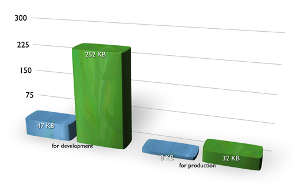
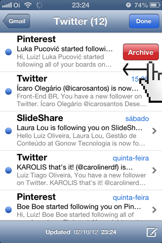

Luiz Tiago

- Front-end Manager @ MGR Tecnologia
- Pós-graduado em Desenvolvimento Mobile @ CESAR
- Graduado em Sistemas para Internet @ Marista
- Co-fundador do jQuery Brasil & Pernambuco.JS
- And more things...
Zepto.JS
- "Zepto is a minimalist JavaScript library for modern browsers with a largely jQuery-compatible API."
- "If you use jQuery, you already know how to use Zepto."

Target platforms
- Safari 5+ (desktop)
- Chrome 5+ (desktop)
- Mozilla Firefox 4+
- iOS 4+ Safari
- Android 2.2+ Browser
- Other WebKit-based browsers/runtimes
- BlackBerry Tablet OS 1.0.7+ Browser
- Opera 10+
- Internet Explorer 6+
- And more things...
jQuery - $()
var match, elem, ret, doc;
// Handle $(""), $(null), $(undefined), $(false)
if ( !selector ) {
return this;
}
// Handle $(DOMElement)
if ( selector.nodeType ) {
this.context = this[0] = selector;
this.length = 1;
return this;
}
// Handle HTML strings
if ( typeof selector === "string" ) {
if ( selector.charAt(0) === "<" && selector.charAt( selector.length - 1 ) === ">" && selector.length >= 3 ) {
// Assume that strings that start and end with <> are HTML and skip the regex check
match = [ null, selector, null ];
} else {
match = rquickExpr.exec( selector );
}
// Match html or make sure no context is specified for #id
if ( match && (match[1] || !context) ) {
// HANDLE: $(html) -> $(array)
if ( match[1] ) {
context = context instanceof jQuery ? context[0] : context;
doc = ( context && context.nodeType ? context.ownerDocument || context : document );
// scripts is true for back-compat
selector = jQuery.parseHTML( match[1], doc, true );
if ( rsingleTag.test( match[1] ) && jQuery.isPlainObject( context ) ) {
this.attr.call( selector, context, true );
}
return jQuery.merge( this, selector );
// HANDLE: $(#id)
} else {
elem = document.getElementById( match[2] );
// Check parentNode to catch when Blackberry 4.6 returns
// nodes that are no longer in the document #6963
if ( elem && elem.parentNode ) {
// Handle the case where IE and Opera return items
// by name instead of ID
if ( elem.id !== match[2] ) {
return rootjQuery.find( selector );
}
// Otherwise, we inject the element directly into the jQuery object
this.length = 1;
this[0] = elem;
}
this.context = document;
this.selector = selector;
return this;
}
// HANDLE: $(expr, $(...))
} else if ( !context || context.jquery ) {
return ( context || rootjQuery ).find( selector );
// HANDLE: $(expr, context)
// (which is just equivalent to: $(context).find(expr)
} else {
return this.constructor( context ).find( selector );
}
// HANDLE: $(function)
// Shortcut for document ready
} else if ( jQuery.isFunction( selector ) ) {
return rootjQuery.ready( selector );
}
if ( selector.selector !== undefined ) {
this.selector = selector.selector;
this.context = selector.context;
}
return jQuery.makeArray( selector, this );
Zepto.JS - $()
return document.querySelectorAll(context)
Noooooossa,
é muito mais rápido!
Será?
jQuery
- Muito código
maior tempo para download - Cache em dispositivos mobile não são bons
- Boa parte do código existe para browsers
que você não precisa mais dar suporte
- Funcionalidades nativas são duplicadas
(ex.: suporte ao JSON e animações) - Você normalmente não usa nem 20% do que ele possui!
jQuery - Um pouco sobre o futuro
- jQuery 1.9 (início de 2013) | Removerão várias interfaces existentes na versão 1.8. Algumas delas ficarão como plugins ou APIs alternativas, apoiadas pelo jQuery
- jQuery 1.9.x (meados de 2013) | Correções
- jQuery 2.0 (início de 2013, pouco depois
da 1.9) | Apoiará as mesmas APIs como
jQuery 1.9, mas sem o suporte aos
IEs 6, 7 e 8.
Zepto.JS
- Código muito pequeno
- Fácil de usar a API para tarefas comuns de manipulação do DOM
- Fácil de extender e customizar
- Muito indicado para Mobile
- Não precisa de suporte a coisas que dizem ser browsers #troll
Zepto.JS
Core
- $.each, $.extend, $.map, $.trim
- $.inArray, $.isArray, $.isFunction, $.isPlainObject
- after(), before(), append(), appendTo(), insertAfter(), insertBefore()
- attr(), removeAttr(), data(), last(), next(), size(), prev(), prop()
- addClass(), css(), hasClass(), removeClass(), toggleClass()
- each(), forEach(), filter(), index(), map(), indexOf()
Zepto.JS
Events
- bind(), unbind()
- delegate(), undelegate()
- on(), off()
- live(), die()
Zepto.JS
Ajax
- $.ajax()
- $.ajaxJSONP()
- $.ajaxSettings()
- $.get()
- $.getJSON()
- $.param()
- $.post()
Zepto.JS
Effects
- animate()
- fadeIn(), fadeOut(), fadeTo(), fadeToggle()
- hide(), show(), toggle()
- slideUp(), slideDown(), slideToggle()
$.fadeOut()
Eu queria muito usar o fadeOut :(
fadeOut é muito legal :(
fadeOut parece Flash, po!
Do it! :)
;(function($){
$.extend($.fn, {
fadeOut: function(){
return this.animate({
opacity: 0
}, 5000, 'linear');
}
})
})(Zepto)
$.fadeOut()
$.slideUp()
Ah o fade é fácil, eu queria slideUp :(
slideUp é muito legal :(
Do it! :)
;(function($){
$.extend($.fn, {
slideUp: function(){
this.css('overflow','hidden');
return this.animate({
opacity: 0
}, 5000, 'linear');
}
})
})(Zepto)
$.slideUp()
Leia o código!
replaceWith()
replaceWith: function(newContent){
return this.before(newContent).remove()
}
indexOf()
index: function(element){
return element ? this.indexOf($(element)[0]) :
this.parent().children().indexOf(this[0])
}
$.get()
$.get = function(url, success){
return $.ajax({ url: url, success: success })
}
$.post()
$.post = function(url, data, success, dataType){
if ($.isFunction(data)) {
dataType = dataType || success,
success = data
data = null
}
return $.ajax({ type: 'POST', url: url, data: data, success: success, dataType: dataType })
}
$.getJSON()
$.getJSON = function(url, success){
return $.ajax({ url: url, success: success, dataType: 'json' })
}
Touch events
$.swipe() / $.swipeLeft()
$.swipeRight()
-

- Hey, isso não é nativo
no jQuery! - Isso funciona para mobile
- jQuery não é voltado para isto
Zepto.JS - Documentation
Micro-libraries / Micro-frameworks
- Fácil de entender o código e forkar
- Baixa e executa mais rápido
- Menos bugs (menos código e excessões)
- ... e você aprenderá realmente como Javascript funciona!